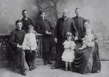

Страницы авторов "Тёмного леса"
Пишите нам! temnyjles@narod.ru
В самом центре Кисловодска на Курортном бульваре расположилось здание непривычной в этой местности архитектуры. Пройти мимо него равнодушно невозможно. Даже при беглом взгляде на это сооружение замираешь: вот-вот польётся восточная мелодия! На фасадном фронтоне строгими буквами сложено "Главные нарзанные ванны". Этим ваннам исполнилось сто десять лет.
В начале двадцатого века Кисловодск становится многолюдным и модным курортом. Пришедшая сюда железная дорога значительно увеличила поток отдыхающих. В этот период Кисловодск нуждался не только в удобном жилье для отдыхающих, но и в новых благоустроенных лечебницах. К этому времени на курорте действовали нарзанные ванны в пансионате Ганешина, в здании Нарзанной галереи, известные ванны Скальковского, которые располагались на месте современного санатория "Нарзан". Однако возникала острая необходимость строить новые ванны, отвечающие всем требованиям современной медицины и новым санитарным нормам.
Участок земли, выделенный под строительство новой лечебницы, располагался довольно узкой полосой (около 75 метров) между берегом реки Ольховки и Тополёвой аллеей - главной улицей курорта. Вероятно, именно это обстоятельство повлияло на форму здания. Центральная часть сооружения - двухэтажная, а на север и юг вытянулись одноэтажные крылья-флигели.
Одна из начальных страниц рассказа о Главных нарзанных ваннах касается имени Эмира Бухарского - Сеида Абд ал-Ахада Бахадура хана (1859-1910г.г.). Легенда, а именно так можно назвать эти сведения, почерпнутые из воспоминаний жительницы Кисловодска и записанные участниками детского краеведческого Центра под руководством С.П. Корнетовой, рассказывает о том, что в 1900г. в Кисловодске на лечении находился Эмир Бухарский. Узнав об объявлении строительства ванного здания, высокий гость предлагает в проекте использовать архитектурные мотивы его далёкой Родины. Если его пожелание будет учтено, он своими капиталами будет участвовать в строительстве этого заведения. Эмир Бухарский был известный меценат, и такая версия, объясняющая архитектурную необычность этого здания, вполне правдоподобна. Но отсутствуют официальные документы, которые могли бы подтвердить её справедливость.
В то время новым помощником старшего архитектора И.И. Байкова становится гражданский инженер Андрей Николаевич Клепинин. В 1900 году ему поручается создание проекта новых ванн.
Первый предложенный Клепининым проект, который учитывал возросший интерес к гидропатическому лечению, состоял из двух зданий, расположенных в разных местах курорта.
Но в 1901 году рождается иной вариант, который соединит разные медицинские процедуры в одном сооружении. Отказ от первоначального плана, возможно, произошёл из-за предложения Эмира Бухарского?
Публика знакомится со вторым проектом Клепинина в "Прибавлении к сезонному листку КМВ" от 22 августа 1901 года.
Попробуем представить внешний вид будущего архитектурного шедевра. Главная часть сооружения - двухэтажный корпус, сложен желтым кирпичом. Светлый кирпич создает настроение праздничное, солнечное, что немаловажно для курортной местности. По центру здания устроены ступени высокого крыльца, где в глубокую лоджию заключена входная дверь. Верхняя часть лоджии украшена стрельчатой подковообразной аркой, а над ней - балкон с тремя узорчатыми арками.
Входной портал оформлен двумя боковыми столбами, по фасадной стороне они украшены майоликовыми цветочными панно. Столбы завершаются глухими башенками с изящными навершиями в виде цветков лотоса. Ниже заключены в рамки из колонн майоликовые панно с изображением растительного орнамента. Башенки обнимает поясок из тонкого каменного кружева. Аттик соединяет основания этих башенок, на котором сегодня читаем: "Главные нарзанные ванны".
Главный фасад украшают окна на первом и втором этажах: внизу они прямоугольные большого размера, а выше - узкие двойные арочные. Оригинальные наличники замечательно их выделяют.
Сильно выступающие боковые ризалиты с огромными двухуровневыми окнами с витражами и наличниками в виде стрельчатой арки придают этой части фасада изящество, а богатые майоликовые панно с цветочным узором создают ощущение необыкновенной нарядности здания. Украшения верхней части ризалитов в виде сложно устроенных башенок подчеркивают индийский акцент архитектурного стиля. Башенки заканчиваются навершиями - бутонами лотоса, но выполнены они иначе, чем на боковых столбах у входа. Богатые лепные украшения, майоликовые панно с изображением павлинов, виноградной лозы, цветов придают зданию особое своеобразие.
Несколько скромнее выглядят боковые фасады в цветниках, образованных одноэтажными флигелями. Тройные окна флигелей оформлены двумя нарядными колонками. В самой верхней части стены украшены сложного орнамента карнизами. Почти плоские крыши ограничены своеобразным парапетом, они имеют широкие свесы кровель.
Здание совершенно симметрично, но из-за естественного уклона северная часть его поднята на высокий фундамент, что вынудило архитектора соорудить затейливую каменную лестницу. Входы в боковые флигели выглядят как прямоугольные порталы со стрельчатыми нишами. Таким образом входные двери защищены от непогоды.
Разнообразные многочисленные украшения словно ноты в большой партитуре сложили восточную мелодию этой архитектурной жемчужины. В весенний день в цветниках под окнами флигелей радует глаз цветущая японская айва, добавляя к восточной музыке ещё и восточные ароматы!
Чуден и неповторим образ этого здания!
Пройдет время, и сам автор проекта Андрей Николаевич Клепинин посчитает своё творение главным в творчестве. Он обратится в администрацию КМВ за разрешением отметить это сооружение памятной доской. Директор КМВ С.В. Тиличеев в 1911г. удовлетворит просьбу Клепинина, и на стене Главных нарзанных ванн появится памятная доска: "Проектировал и построил инженер А.Н. Клепинин. 1901 - 1903 гг.".
15 июня 1904 года на кисловодском курорте состоялось освящение главного здания, а к концу 1904 года завершается всё строительство. В начале января 1905 года Управление КМВ примет здание от подрядчиков в казну. Новое ванное здание с оборудованием обошлось в 383 тысячи рублей и предусматривало исполнение всех достижений бальнеотехнической науки, лечебных методик, санитарных норм того времени.
Войдём в дверь центрального входа. Здесь всё располагало к отдыху: высокий потолок, щедро украшенный лепниной, огромные зеркала в резных рамах, экзотические растения, прекрасные люстры, разливающие свет через кристаллики хрусталя. Из вестибюля две двери выводили в две половины: южную - мужскую, северную - женскую. В обоих отделениях обустроено по 19 ванных кабин, каждая площадью в 13 кв.м. Такая площадь, отведенная каждому лечащемуся была большой роскошью по сравнению с прежними ваннами. Между кабинами бетонные перегородки. Кабины прекрасно вентилируются.
На сооружение ванного здания работали многие предприятия России.
Ванны выложены фаянсовыми плитками, полы сделаны из пирогранитных плиток производства харьковского завода барона Бергенгейма.
Кафелем с завода Сазонова облицованы стены.
Керамические панно, автором которых, очевидно, является знаменитый художник М.В. Врубель, изготовлены мастером П.К. Ваулиным в керамической мастерской "Абрамцево", что принадлежала С.И. Мамонтову, известному в России меценату.
Скульптор Л.К. Шодкий из Ростова выполнил разнообразные скульптурные украшения.
Здание строилось из желтого кирпича, произведенного на пятигорском кирпичном заводе А.П. Бородкина.
Генеральный подряд на производство строительных работ осуществлял московский купец А.Я. Иоффе. Он сам подбирал и закупал строительные материалы, отвечал за их качество. Сам нанимал рабочих-строителей необходимых специальностей. Всеми работами на строительстве руководил технолог Л.И. Коган.
Здание строилось на сложном в геологическом отношении грунте.
Из-за высокого стояния грунтовых вод были сделаны бетонные фундаменты, а для предупреждения сырости в помещениях выше был уложен асфальтовый изоляционный слой.
В соответствии с главным проектом два полукруглых одноэтажных флигеля, протянувшихся от главного здания на север и юг строит другой подрядчик - Павел Иванович Миклашевский. В каждом крыле предусмотрено 12 ванных кабин и соединяющий их коридор.
Это строительство финансировалось К.Ф. Тахтамировым, контрагентом казенного "Гранд-отеля", согласно особого договора.
Суть этого договора состояла в следующем: К.Ф. Тахтамирову предоставляется право на устройство десяти нарзанных ванн в новом здании "Гранд-отеля", для которых будет бесплатный отпуск нарзана взамен на строительство указанных флигелей.
Ванное здание расположено ниже уровня главного источника, поэтому нарзан самотёком поступал в специальный накопительный резервуар машинного отделения, нагревался паром и подавался в кабины и бассейны.
В то время в главном корпусе было устроено два бассейна с проточным нарзаном. Дно бассейнов было наклонным, глубина их составляла от 1м до 2,5 м. Температура нарзана в бассейнах - 23 градуса C. Железобетонные стены бассейнов были облицованы изразцовой плиткой, площадь поверхности воды - 30 кв.м. Пол вокруг бассейнов был выложен пирогранитной плиткой и имел подогрев. Обмен воды осуществлялся постоянно, за 12 часов вода полностью менялась.
Гидропатическая лечебница располагалась на втором этаже главного корпуса, туда вели четыре лестницы.
Разнообразные лечебные процедуры, отпускаемые в новых нарзанных ваннах, широко разрекламированные в "Путеводителе по Кавказским Минеральным Водам" 1912 года, дают возможность представить высокий уровень развития бальнеологической науки начала 20 века. Здесь отпускались и всевозможные души пресной водой: Шарко, "шотландский", восходящий, стенной, круговой, дождевой, спинной. Были устроены кабины сухо-воздушного парового лечения (сауны). Была и особая массажная ванна "велленбад", из нижнего отверстия которой под давлением подавалась теплая вода. Несколько позже, в 1910 году, по инициативе доктора В.И. Воячека оборудовано отделение сухой ингаляции, а в 1912 году - влажной. Восемь кабинетов были предназначены для вдыхания распыленных лекарственных веществ. Из Нарзанной галереи в Гидропатическую лечебницу переведен газовый кабинет для отпуска углекислых душей. В 1914 году, В здании Нарзанных ванн был открыт электросветолечебный кабинет.
Горный инженер Иван Михайлович Пугинов в 1909 году талантом своим и хлопотами обеспечил оснащение ванного здания передовой техникой и новыми технологическими приемами, что позволило максимально сохранять лечебные свойства чудодейственного нарзана.
В 1908 году произошли небольшие изменения: прогулочные площадки на крыше флигелей были заменены железными покатыми крышами, а в семидесятые годы исчезла высокая труба котельной, поскольку перешли на другой вид топлива. По -другому стало называться заведение: первоначально было написано "Углекислые Ванны Нарзана". Однако, эти изменения не существенны, и можно утверждать, что внешний вид здания до наших дней сохранил первоначальный облик.
С течением времени происходило переоборудование, перепланировка внутренних помещений ванн. Новые лечебные методики требовали усовершенствования бальнеологического оборудования, устройства новых технических узлов. Были упразднены бассейны: вместо них устроили залы ожидания и отдыха.
Это здание на заре своей истории служило и иным целям. Управление Вод в январе 1906 года открыло трехлетнее начальное училище для детей рабочих и служащих кисловодского курорта. Под это заведение были заняты помещения на втором этаже главного корпуса. В это училище приняли 25 безграмотных мальчиков и девочек старше семи лет, детей рабочих и служащих кисловодского курорта. Обучение, учебники, тетради были бесплатными. Для училища были определены большая классная комната и просторный зал отдыха. Училище имело свой отдельный вход. Преподавателями были учительница начальных классов и учитель Закона Божия. Здесь обучалось ежегодно полсотни детей.
В стенах главных нарзанных ванн училище располагалось до 1910 года, позже его переведут в другие арендованные управлением курорта помещения.
Восхищаясь Главными нарзанными ваннами, славим имя создателя их - Андрея Николаевича Клепинина.
Фамилия Клепининых в России весьма известна, свою первую страницу она начинает в XVII веке. Мы же прикоснёмся к истории трёх поколений Клепининых: Николая Андреевича - отца архитектора, Андрея Николаевича - самого архитектора, Николая и Дмитрия - сынов архитектора.
Клепинин Андрей Николаевич родился 4 октября 1871 года в г. Екатеринбурге, в семье потомственного дворянина Екатеринбургской земской управы Николая Андреевича и Надежды Николаевны Клепининых. Отец нашего зодчего один из известнейших земских деятелей Урала конца XIX - начала XX вв., отдавший общественной деятельности свыше 40 лет. Круг его интересов был весьма разнообразен: будучи по образованию юристом, служит в земской управе, сочетает должности мирового судьи и председателя земской управы. Он состоял членом Уральского общества любителей естествознания, активно участвовал в заседаниях попечительских советов реального училища и женской гимназии, самым активным образом участвовал в деятельности екатеринбургского музыкального кружка. Деятельность Николая Андреевича Клепинина проявляется в работе епархиального комитета православного миссионерского общества, в комитете попечительства общества народной трезвости. Он действительный член Пермского губернского статистического комитета. В 1904 году здоровье Николая Андреевича Клепинина ухудшилось, он перебирается к сыну на Кавказ, В мае 1905 года в Пятигорске он скончается.
В семье, где царил дух любви, уважения, стремления к знаниям, желание быть полезным своему Отечеству, воспитывалось семеро детей. Как показало время, каждый из них в истории нашей родины оставил след, достойный изучения и осмысления потомками.
Сын Андрей (будущий создатель нарзанных ванн) в 1890 году окончил Екатеринбургскую классическую гимназию и поступил в Петербургский университет. В 1891-96 гг. обучался в Институте гражданских инженеров. По распоряжению министра с марта 1899 г. по август 1905г. состоял архитектором в распоряжении директора КМВ, занимаясь главным образом Кисловодской группой. Жил на кисловодской даче доктора Аглинцева, которую построил для него. В Кисловодске возвел здание Казенной гостиницы "Гранд-отель" по проекту И.И. Зелинского, занимался замощением улиц (1902г.), по его проектам возведены не только Главные нарзанные ванны, но и дом П.И. Склотовского, дача Кабат, дом Манесси и др. С лета 1905 года до 1907 г. работал городским архитектором Кисловодска. К этому времени относятся проекты и строительства собственного дома и ряда особняков в Кисловодске. Затем следует перевод нашего зодчего в Одессу, где он займет должность руководителя строительной части Русского общества пароходства и торговли, крупнейшей судовой компании на Черном море.
Рассказ о замечательном архитекторе будет далеко не полным, если ограничиться только перечислением его творений. В каждом проекте присутствует своя мелодия, что придает его зданиям необыкновенный романтический акцент. Одни сооружения по проектам талантливого архитектора время сохранило для нас, другие здания не сумели сохранить мы, авторство третьих за давностью событий не удается установить и утверждать, что это проекты Клепинина. Однако бесспорными его работами мы называем несколько строений в Кисловодске и Пятигорске.
Одним из архитектурных украшений центральной части Кисловодска по нынешней улице Коминтерна является дача Александра Ивановича Кабата. Двухэтажное кирпичное здание построено на высоком каменном цоколе в стиле "модерн" с элементами готики. Главный фасад здания асимметричен, его украшают ризалиты и уступы, прямоугольные и арочные проемы окон, балконы и открытые террасы. Здание очерчено карнизом с аркатурой и декоративными башенками. В проект внесены изменения в середине 20 века: открытая терраса в северо-западном углу превращена в закрытое помещение с тремя окнами. Сегодня это здание, похожее на замок, стало одним из корпусов санатория " Луч".
В начале улицы Красноармейской в 1901 году по проекту А.Н. Клепинина возводится особняк доктора П.И. Склотовского. На первый взгляд может показаться это сооружение совсем простого вида, но надо полагать, что в начале 20 века оно было весьма нарядным! Протяженное двухэтажное кирпичное здание без архитектурных украшений условно можно назвать упрощенным модерном.
По улице имени Розы Люксембург среди построек двадцатого века выделяется старый дом номер два. Старый кирпич местами повреждён временем, былые украшения фасадной стены заметно упрощены, но взгляд задерживается на этом доме! Даже сегодня, когда современные владельцы его несколько переделали, ощущается талантливая рука архитектора - Андрея Николаевича Клепинина. Предположительно проект был создан в 1905-1907 годах.
В истории КМВ А.Н. Клепинин оставил огромный след. В Пятигорске с восторгом рассматриваем здание Пушкинских ванн, замирает сердце при взгляде на купол Церкви Михаила Архангела, что рядом с железнодорожным вокзалом. Как светло и празднично выглядит на Бульваре им. Гагарина дом, который построил архитектор для своей семьи!
В 20-м году, во времена политической неразберихи, беззакония Андрей Николаевич из Одессы эмигрировал в Югославию. Человек, глубоко верующий, на земле приютившей его, построит православный храм, Позже переберётся во Францию и обоснуется в Париже. В1954 году замечательный зодчий покинет этот мир и будет похоронен в предместье Парижа.
Не мало разочарований и трагедий придется пережить Клепининым вдали от Родины. Этой русской семье духовный стержень, взращённый предшествующими поколениями, позволит с достоинством перенести все невзгоды, все тяжелейшие испытания, уготовленные им жизнью.
В семье Андрея Николаевича и Софьи Александровны (Степановой до замужества) Клепининых родилось двое сынов. Старший - Николай (1899 г. - Пятигорск) станет историком, писателем. Им написан интереснейший роман в 1927 году в Париже "Святой и благоверный князь Александр Невский", ещё ряд произведений. Во Франции в русской эмигрантской среде вел пропаганду возвращения на родину, примирения с советской властью. Семьи Николая Клепинина и Марины Цветаевой находились в дружеских отношениях, квартиры они снимали по-соседству, много общались, Муж поэтессы Цветаевой - Эфрон С.Я., посодействовал Клепининым в возвращении на Родину. На Родину вернуться довелось, но вскоре обвиненные в шпионаже в пользу Франции, в июле 1941 года Клепинины были расстреляны. Дочь, Клепинина-Львова (после возвращения из эмиграции Клепининым дали новую фамилию - Львовы) Софья Николаевна (1929-2000) - журналистка. Долгое время работала научным сотрудником Музея-квартиры М. Цветаевой в г. Болшеве.
Младший сын Дмитрий родился в Пятигорске в 1904 году, Эмигрировал сначала в Белград, затем обосновался в Париже.В Париже закончил Свято-Сергиевский православный богословский институт. Один из основателей благотворительной и культурно-просветительной организации помощи русским эмигрантам "Православное дело", принимал горячее участие в деятельности организации "Сопротивление". Активно помогал евреям, свидетельствуя об их православном крещении, тем самым спасая их от горькой участи концлагеря. Организовал Комитет помощи заключенным лагеря Компьен. Жизнь замечательного гуманиста оборвалась в Бухенвальде в феврале 1943 года.
За подвиги во имя человечности отец Дмитрий был удостоен Звания "Праведный между нациями" от государства Израиль. Канонизирован Константинопольским патриархатом в 2004 году и причислен к лику святых. Настоятель церкви Покрова Святой Богородицы при обществе "Православное Дело" в Париже объявил о присвоении звания Дмитрию Клепинину "Праведник народов мира".
Клепинины жизни свои положили на алтарь свободы, справедливости, человеколюбия, любви к родному Отечеству. Известность эта фамилия снискала в огромном мире не только архитектурными творениями, но и большими деяниями духовного характера, приумножившими славу нашего Отечества.
Уважая талант и заслуги Андрея Николаевича Клепинина в 1994 году его назвали Почётным гражданином Кисловодска.
Создание Кисловодских Нарзанных Ванн собрало созвездие выдающихся имен наших соотечественников: А.Н. Клепинин, А.Я. Иоффе, Л.И. Коган, К.Ф. Тахтамиров, П.И. Миклашевский, М.В. Врубель, П.К. Ваулин, Л.К. Шодкий, И.М. Пугинов...
Богата Россия талантами! Ярчайшее подтверждение тому - кисловодская архитектурная Жемчужина!
Сегодня Кисловодские Нарзанные Ванны являются памятником архитектуры федерального значения. Закон охраняет это сооружение. Только остается сожалеть, что охраняет закон, а не люди!
Время не щадит это кисловодское чудо, оно нуждается в безотлагательной помощи.
Когда же эта помощь придет?
Трайдук Л.В., экскурсовод
Кисловодск
Январь 2012 г.
Иллюстрации к статье "Кисловодская жемчужина"
|  |
В фотоальбоме фотография семьи Клепининых 1890 года имеет пояснения. На снимке стоят слева на право Александр, Николай, Николай Андреевич, глава семейства, Андрей. Во втором ряду слева сидит Борис, рядом Сергей, справа сидит Надежда Николаевна, на её коленях сидит Юрий, рядом стоит Вера. Николай Николаевич - брат нашего архитектора - известный ученый-почвовед, его именем названа научная станция в Крыму. Борис Николаевич - брат архитектора - начальник Приморского переселенческого района на Дальнем Востоке, именно он пригласил на работу автора "Дерсу Узала" Арсеньева. Вера Николаевна - сестра архитектора - актриса, ученица Мейерхольда. |
Л.Трайдук. А.Н. Клепинин - продолжение разговора
{kind=link}